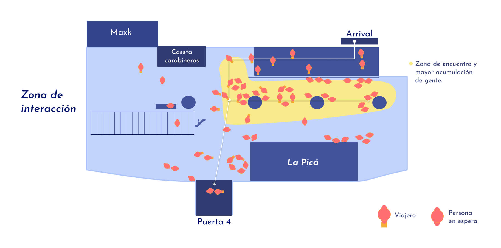
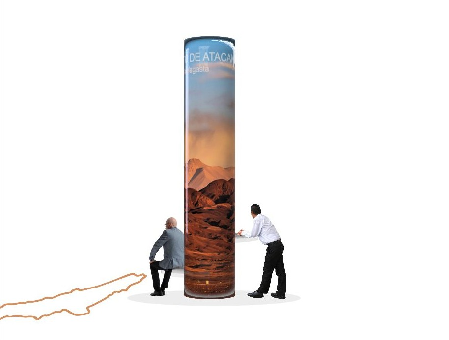
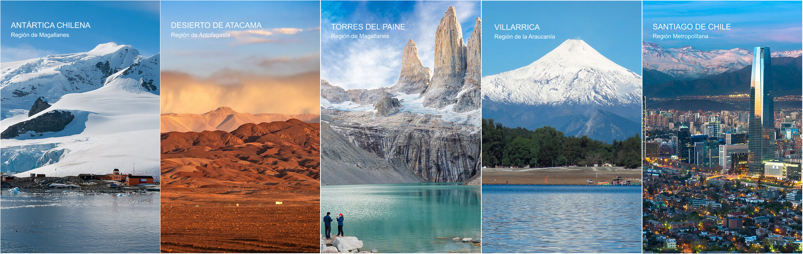
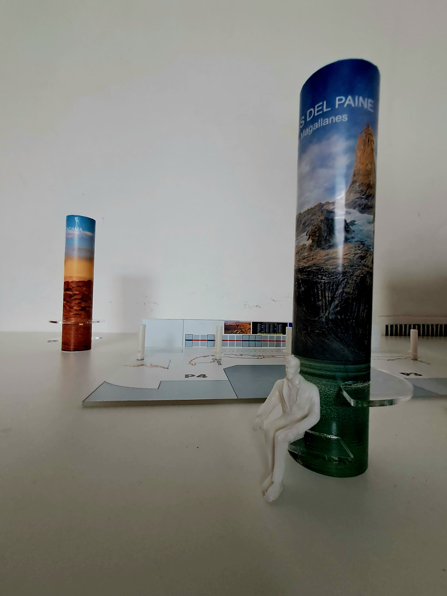

Chile en 5 pilares
Chile en 5 Pilares es un proyecto desarrollado en colaboración con la Subsecretaría de Turismo, enfocado en identificar y resolver problemáticas en la experiencia del usuario dentro del Aeropuerto Internacional de Chile. El objetivo principal fue doble: por un lado, mostrar a los turistas un primer vistazo del país mediante una estrategia de comunicación organizada en "5 Pilares" de la identidad nacional; y, por otro, proponer el diseño de superficies de apoyo que promuevan una espera más cómoda y funcional dentro del recinto. La iniciativa buscó así optimizar la bienvenida y la primera impresión que los visitantes tienen de Chile.



